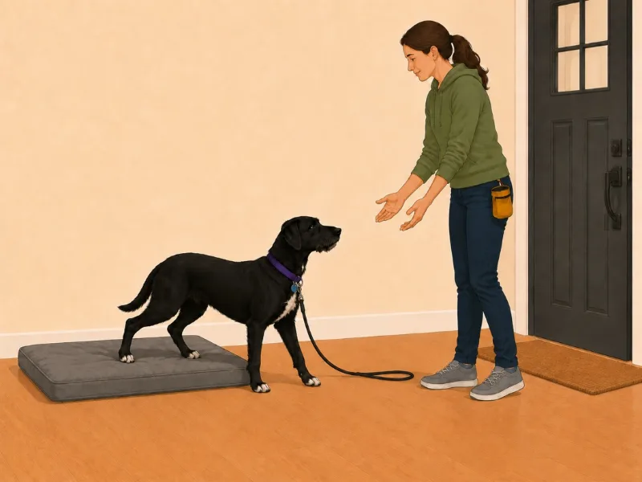
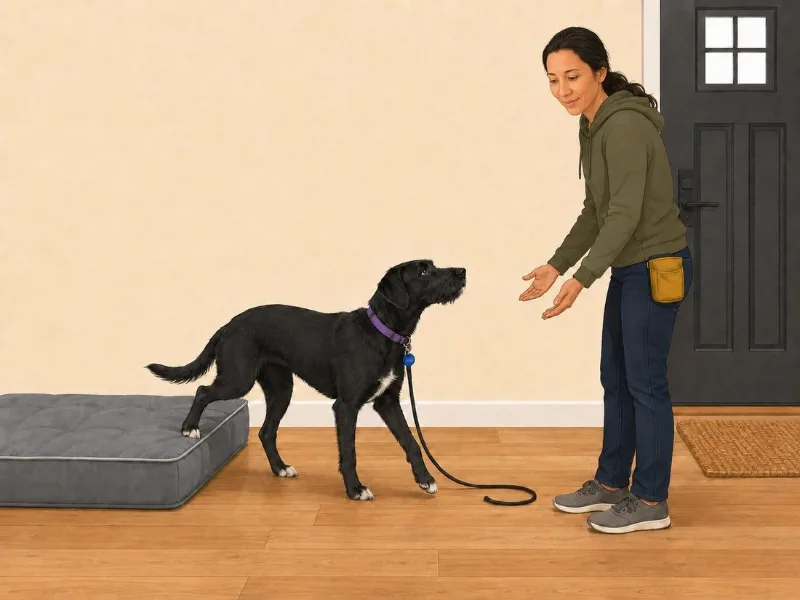

Build write-up · 6 min read
How I built Lucy Learns
A dog-training app for my own household, and three tries at one problem: following instructions with a leash in one hand and a dog who doesn’t follow a script.
- Role
- Everything: research, interaction, illustration, build
- For
- Two handlers, one dog, and the trainer whose program it follows
- Used
- One-handed in a hallway, or propped on a stand, with no signal needed
- Status
- In use. The next version, a teleprompter, isn’t built yet
-

01 Pick up where the trainer left off
-

02 Run it one instruction at a time
-

03 Finish on a win
My approach
-
01Research
- A trainer’s handouts, written for someone sitting still
- Practice watched where it happens: leash in one hand, five minutes
- The trainer’s words and levels kept as she wrote them
-
02Design
- Progress in the trainer’s levels, not points and streaks
- One instruction per screen, one tap per rep
- Three tries at the session: voice commands, a timer, a teleprompter
-
03Illustrate
- The same dog in the same room, with only the behavior changing
- Four styles in a month, from painted to flat
- Every scene briefed in writing, so the set changes together
- Working prototypes in an afternoon, so ideas reach the hallway fast
-
04Test
- On a real phone: installed, offline, one-handed
- Real sessions, with handouts from Lucy’s boot camp
- A cold read of the pictures, in shuffled order
- Two pictures failed and were redrawn until strangers read them right
The problem
We hired a professional trainer for our dog and got a stack of handouts: good instructions, written for someone sitting still.
Practice happens in a hallway, leash in one hand and treat pouch in the other, five minutes at a time. By evening, nobody remembers whether the barking is getting better or it was just a bad Tuesday.
So the app has a narrow job: turn the handouts into something you can run one-handed, and record enough that “is this working?” has an answer. It supports the trainer. It doesn’t replace one.
Three tries at the same screen
Every version of the session screen has had one job: keep the handler’s eyes and hands on the dog. The first two failed at it in the hallway, and each failure told me what to try next.
 Talk to the phoneLucy heard every command as hers
Talk to the phoneLucy heard every command as hers Let a timer walk the stepseach step moved on by itself, and a dog doesn’t keep time
Let a timer walk the stepseach step moved on by itself, and a dog doesn’t keep time Follow the handlernext: a script that keeps its place by hearing you
Follow the handlernext: a script that keeps its place by hearing you
Try one: talk to the phone
Voice looked like one feature. It was two: the app reading steps aloud, and the app listening for commands.
Speakingon by default
- Runs on the device
- No permission needed
- Works with no signal
Listeningoff by default
- Ships audio to a server
- Needs a microphone grant
- Needs a connection
The listening half failed, and the microphone wasn’t why. It was a misconception, and it was mine: I designed the commands for the handler and forgot who else was listening.
Say “next step” brightly at a phone and you’re using the bright voice her cues come in. Lucy is being taught that words in that voice are for her, and every one distracted her.
The AI I built it with didn’t flag that. Neither did I. A couple of real sessions did, and listening came out.
Try two: let a timer walk the steps
So a timer walked the steps instead, each one moving on after a set number of seconds.
Then Lucy went to a training boot camp, and we ran real sessions from the handouts she came home with.
The timer didn’t hold up. A dog doesn’t keep time: when something goes wrong, the session pauses, and the clock doesn’t.
Try three: follow the handler
The next version is a teleprompter: the script in type you can read from across the hallway, keeping its place by hearing you.
![The handler stands in the hallway, seen from behind with her hands in her hoodie pocket, reading a tablet propped upright in its case on a small side table in front of her. The tablet shows the app as a teleprompter: the step just done, “Say her name brightly. ‘Lucy!’”, in gray; the current step, “Lead her to the bed with a treat. Say ‘Go to bed,’” in large type on a violet band; the next, “Reward her twice on the bed”; and “Listening for ‘Go to bed’” at the foot. Lucy sits on her gray bed a stride past the table, looking up at the handler.](../img/lucy/prompter-sketch.webp?v=5)
It isn’t built, and I don’t know yet whether it holds up. Listening comes back with a different job, and it still needs a microphone in a room with a dog in it.
Do the pictures earn their place?
Every level opens on a picture, and getting them consistent took a month. A training app needs the same dog in the same room on every screen, with only the behavior changing.
-

01Painted
-

02Warm vector
-

03Cool and flat
-

04Warm plaster
The boot camp handouts raised a harder question. Does someone running a session need a picture of every step? I don’t think so.
The next version keeps one picture at the start of each exercise, to set the scene, and then goes straight to the script.
When a picture has to say something, it gets a cold read. Eight scenes went shuffled to four AI models that knew nothing about the project, and the two they all misread were redrawn.

Before · 0 of 4
After · redrawnWhat held through every version
Progress in the trainer’s units, not mine
The obvious move was points, streaks, or a satisfying progress bar. I used the trainer’s levels instead, so the number on the program map is the number in her lesson report.
Streaks use the goal-gradient effect: they pull people toward the app’s goal. The goal that matters here is Lucy’s next level.
-

The program, in her levels
-

The week, ready to hand to the trainer
-

The cues, in her words
Logging happens during the session, not after it
One tap after each rep, and one more to rate her arousal, meaning how worked up she got, which saves the session. That’s the whole logging burden, on purpose: anything heavier doesn’t get used with a dog attached to your other arm.
Use is the check that takes features out
The AI didn’t decide what to build. Every decision here came from watching two people try to practice with a dog, in a hallway, five minutes at a time.
Anything I’m not sure of ships switched off, gets turned on in the hallway, and earns its place or goes. Voice commands went. The timer is next. A feature that survives that is one I’ve watched work.